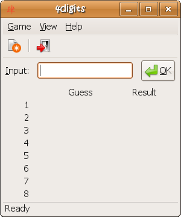
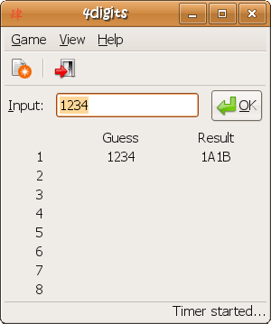
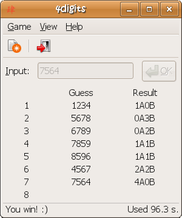
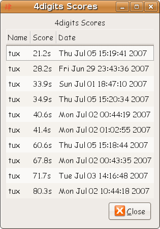
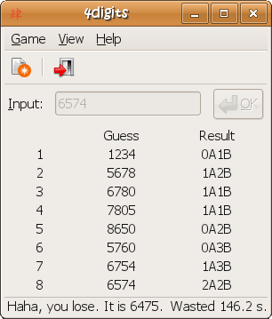

| 4digits Manual |
4digits is a guess-the-number puzzle game. It's called Bulls and Cows, and in China people simply call it Guess-the-Number. The game's objective is to guess a four-digit number in 8 times in as less times as possible. It is similar to Mastermind, but the four digits are different to each other. 4digits has both graphical user interface version and textual user interface version. This manual demonstrates the GUI version.
Before playing 4digits, you need python, python-gtk and python-glade installed in your computer.
Python is usually already installed in your computer if your are a using a modern Linux distribution. You can install python-gtk and python-glade from the software repository of your distribution. Add a launcher of 4digits to the panel of your desktop, then you can start to play it easily.
Install python, python-gtk and python-glade for your system.
Click here to download PyGTK for Windows. Clink here to download libglade-bin for Windows. Install PyGTK then unzip and copy the contents of the bin directory of libglade-bin to %gtkdir%/bin. If you still have problem, see here.
Fink has PyGTK for mac. You can try.
When you start a game, what it looks like is show in Figure 1. You are given eight times to guess a four-digit number. A digit is marked A if its value and position are both correct, and marked B if only its value is correct. You win the game when you get 4A0B. Good luck!

Figure 1 The main window when you start a game.
In Figure 2, the answer is 5184, which is known somehow. The first guess is 1234, then you get 1A1B. Why? 1A because '4' in 1234 and 5184 has the same value and position, and 1B because '1' in 1234 and 5184 share the same value but different position. If you enter 3456 then, you get 0A2B, because the values of '4' and '5' are right but there positions are not correct.

Figure 2 You get 1A1B when the answer is 5184.
A typical game in which the player wins is shown in Figure 3. The answer 7564 is guessed in 96.3 seconds.

Figure 3 When you win a game.
If your time(score) is in the top ten you will be shown the list of top scores. You can also review the scores later by choosing Scores from the Game menu.

Belowe in Figure 4 is a game in which my brain fails me.

Figure 4 When you lose a game.
Hermann Kraus wrote a tutorial on how to solve your game with the hinttable.
4digits is written by Pan Yongzhi. Go to 4digits homepage for more info.
4digits is free software; you can redistribute it and/or modify it under the terms of the GNU General Public License as published by the Free Software Foundation; either version 2 of the License, or (at your option) any later version.
4digits is distributed in the hope that it will be useful, but WITHOUT ANY WARRANTY; without even the implied warranty of MERCHANTABILITY or FITNESS FOR A PARTICULAR PURPOSE. See the GNU General Public License for more details.
You should have received a copy of the GNU General Public License along with 4digits; if not, write to the Free Software Foundation, Inc., 51 Franklin Street, Fifth Floor, Boston, MA 02110-1301, USA.